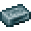
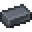
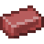

강철
Steel is an advanced material which can be used to create tools and Armor, and comes in a few different varieties: Steel, Black Steel, Red Steel, and Blue Steel.
In order to create steel, you must first create Pig Iron in a Blast Furnace, and cast it into Ingots.


티어 III
선철 주괴는 단조하여 고탄소강 주괴를 만들 수 있으며, 다시 단조하면 강철 주괴가 됩니다
흑강
흑강은 강철을 다른 금속들과 합금하여 만드는 강화된 강철입니다. 흑강을 만들기 위해서는 도가니에서 약강철을 만들어야 합니다.

약강철
합금 비율:
- 50 - 70 % : 강철
- 15 - 25 % : 니켈
- 15 - 25 % : 헤파티존
녹은 약강철은 주조하여 주괴로 만들 수 있습니다.
제작법: tfc:welding/high_carbon_black_steel_ingot
약강철 주괴는 다시 선철 주괴와 용접하여 고탄소 흑강 주괴를 만들 수 있습니다. 마지막으로, 고탄소 흑강 주괴를 모루로 단조하면 흑강 주괴를 만들 수 있습니다.
Black Steel can be used to craft tools and Armor, and also is used as a key ingredient in the creation of Blue Steel and Red Steel.
청강
청강은 적강과 더불어 가장 높은 티어의 금속 중 하나입니다. 흑강과 비슷하게 첫 단계는 약한 청강을 도가니에서 만드는 것입니다.

약한 청강
합금 비율:
- 50 - 55 % : 흑강
- 20 - 25 % : 강철
- 10 - 15 % : 비스무트 청동
- 10 - 15 % : 스털링 실버
제작법: tfc:welding/high_carbon_blue_steel_ingot
약한 청강 주괴는 흑강 주괴와 용접하여 고탄소 청강 주괴를 만들 수 있습니다. 마지막으로, 고탄소 청강 주괴를 모루로 단조하면 청강 주괴를 얻을 수 있습니다.
Blue Steel can be used to create tools and Armor, and a Blue Steel Bucket. The blue steel bucket is a powerful bucket capable of transporting source blocks of lava and molten metals. Blue steel is also used as a crafting ingredient in one of the most sought after items in the game... a Bucket.
적강
적강은 청강과 더불어 가장 높은 티어의 금속 중 하나입니다. 흑강과 비슷하게 첫 단계는 약한 적강을 도가니에서 만드는 것입니다.

약한 적강
합금 비율:
- 50 - 55 % : 흑강
- 20 - 25 % : 강철
- 10 - 15 % : 황동
- 10 - 15 % : 로즈골드
제작법: tfc:welding/high_carbon_red_steel_ingot
약한 적강 주괴는 흑강 주괴와 용접하여 고탄소 적강 주괴를 만들 수 있습니다. 마지막으로, 고탄소 적강 주괴를 모루로 단조하면 청강 주괴를 얻을 수 있습니다.
Red Steel can be used to create tools and Armor, and a Red Steel Bucket. The red steel bucket is a powerful bucket capable of transporting source blocks of water and other fluids. Red steel is also used as a crafting ingredient in one of the most sought after items in the game... a Bucket.